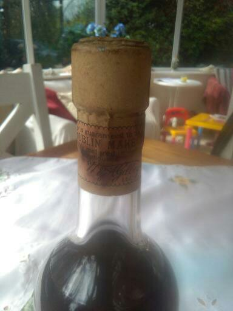
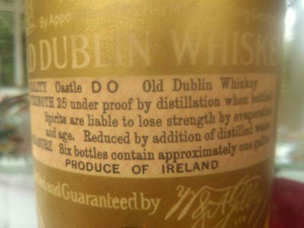
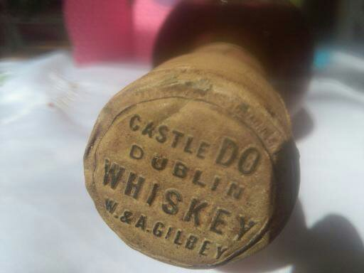

Hello folks, I am looking for any information regarding a bottle of 'Old Dublin Whiskey' by appointment to his Majesty King George V.
Castle Do Irish Whiskey, W &A Gilbey.
F8 54
C5 32
UGB
I think that it is from around 1928
Looking forward to your posts.
It is in my family many decades and I would love to know would it still have it's alcohol content.
NOTE: This forum is no longer active. This is an archive copy of the forum as it was on 10 March 2018.
Vintage whiskey
5 posts
• Page 1 of 1
Vintage whiskey
 by DAISY » Thu Apr 14, 2016 3:07 pm
by DAISY » Thu Apr 14, 2016 3:07 pm
- Attachments
-
- 
- 1459857431416.jpg (24.2 KiB) Viewed 602 times
-
- 
- Vintage Whiskey 'Old Dublin Whiskey'
- 1459857430019.jpg (27.29 KiB) Viewed 602 times
-
- 
- STRENGTH 25 under proof by distillation when bottled.
- 1459857436607.jpg (23.13 KiB) Viewed 602 times
-
- 'This whiskey is guaranteed to be PURE DUBLIN WHISKEY and thoroughly matured in our bonded warehouses.'
'This Whiskey is guaranteed to be PURE DUBIN MAKE and is thoroughly matured in our bonded ware houses' Produce of Ireland. Castle Do Irish Whiskey - 1459857431416.jpg (24.2 KiB) Viewed 602 times
- 'This whiskey is guaranteed to be PURE DUBLIN WHISKEY and thoroughly matured in our bonded warehouses.'
Last edited by DAISY on Tue Apr 19, 2016 12:31 am, edited 2 times in total.
- DAISY
- New Spirit
- Posts: 3
- Joined: Thu Apr 14, 2016 1:59 pm
Re: Vintage whiskey
 by IrishWhiskeyChaser » Thu Apr 14, 2016 5:18 pm
by IrishWhiskeyChaser » Thu Apr 14, 2016 5:18 pm
Any chance of a picture as it could help alot.
Also make sure we can see the top and seal etc.
If the fill level is high the whiskey may actually be okay.
Also make sure we can see the top and seal etc.
If the fill level is high the whiskey may actually be okay.
Sláinte Adrian
- IrishWhiskeyChaser
- Site Admin
- Posts: 2910
- Joined: Tue Mar 17, 2009 1:37 pm
- Location: A Dark Dunnage somewhere in Galway
Re: Vintage whiskey
 by TheWhiskeyBro » Fri Apr 15, 2016 8:55 am
by TheWhiskeyBro » Fri Apr 15, 2016 8:55 am
Thanks for all the information, Castle JJ and Castle DO were sister brands to today's Redbreast.
Your dating is probably accurate, but I will check my records as I have a newspaper advert that refers.
Cheers
Your dating is probably accurate, but I will check my records as I have a newspaper advert that refers.
Cheers
- TheWhiskeyBro
- Hogshead
- Posts: 962
- Joined: Tue Mar 17, 2009 11:44 am
- Location: Sandyford, Dublin
Re: Vintage whiskey
 by corkriain » Wed May 11, 2016 9:38 pm
by corkriain » Wed May 11, 2016 9:38 pm
Hello,
High alcohol content, as in whiskey, acts as a natural barrier to spoilage by micro-organisms. However this does not always mean that the whiskey will taste good.
If there has been evaporation from the bottle, then the flavour of the whiskey has more than likely been compromised. Excess oxygen reacts with the ethanol to produce other compounds (e.g. Acetaldehyde) that in excess do not taste good. Some of the lighter fruity/floral esters will also tend to evaporate from the liquid over long periods of time.
If the cap/seal has stood the test of time, then the whiskey should taste as good as the day it was bottled. One exception is the possibility of taints from the cork if the whiskey has been stored for a long time on its side. The correct storage for spirits is standing upright.
Although the level could ideally be higher in the neck of the bottle, I have to say that your whiskey looks in decent condition. Hope this info is of some help to you.
Please do PM me if you are interested in selling your whiskey. I am a collector of old Irish Whiskeys and would love go add this bottle to my collection.
Regards,
Eric
High alcohol content, as in whiskey, acts as a natural barrier to spoilage by micro-organisms. However this does not always mean that the whiskey will taste good.
If there has been evaporation from the bottle, then the flavour of the whiskey has more than likely been compromised. Excess oxygen reacts with the ethanol to produce other compounds (e.g. Acetaldehyde) that in excess do not taste good. Some of the lighter fruity/floral esters will also tend to evaporate from the liquid over long periods of time.
If the cap/seal has stood the test of time, then the whiskey should taste as good as the day it was bottled. One exception is the possibility of taints from the cork if the whiskey has been stored for a long time on its side. The correct storage for spirits is standing upright.
Although the level could ideally be higher in the neck of the bottle, I have to say that your whiskey looks in decent condition. Hope this info is of some help to you.
Please do PM me if you are interested in selling your whiskey. I am a collector of old Irish Whiskeys and would love go add this bottle to my collection.
Regards,
Eric
- corkriain
- New Spirit
- Posts: 8
- Joined: Thu Jun 26, 2014 10:53 pm
- Location: Cork
Re: Vintage whiskey
 by IrishWhiskeyChaser » Thu May 12, 2016 10:12 am
by IrishWhiskeyChaser » Thu May 12, 2016 10:12 am
Thanks for the pics, looks great (for it's age) and yes you have a nice little treasure on your hands.
It is probably worth a few quid and I would not be selling it from less than €1000 but if you were to sell it I think you should think of Auction.
And yes you can date it quite easily by the Appointment to his Majesty King George V which is 1910 to 1936, which is not a bad band of time to be dating such an old bottle.
So your 1928 is perfectly reasonable but I don't think it matters whether it is from 1910 or 1936 either as it will not affect the value.
Thanks for sharing and best of luck no matter what you do with it.
Let us know how you get on.
It is probably worth a few quid and I would not be selling it from less than €1000 but if you were to sell it I think you should think of Auction.
And yes you can date it quite easily by the Appointment to his Majesty King George V which is 1910 to 1936, which is not a bad band of time to be dating such an old bottle.
So your 1928 is perfectly reasonable but I don't think it matters whether it is from 1910 or 1936 either as it will not affect the value.
Thanks for sharing and best of luck no matter what you do with it.
Let us know how you get on.
Sláinte Adrian
- IrishWhiskeyChaser
- Site Admin
- Posts: 2910
- Joined: Tue Mar 17, 2009 1:37 pm
- Location: A Dark Dunnage somewhere in Galway
5 posts
• Page 1 of 1